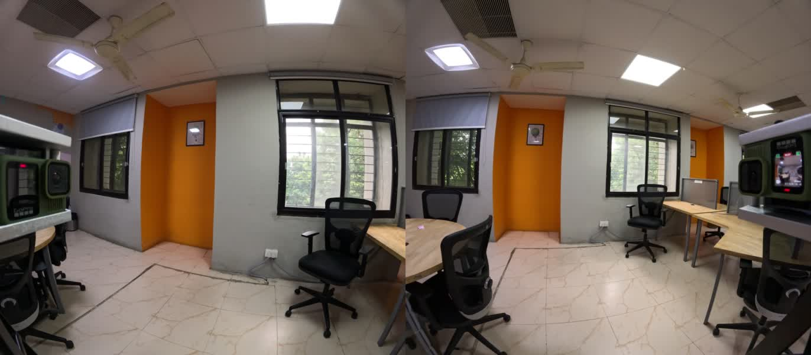
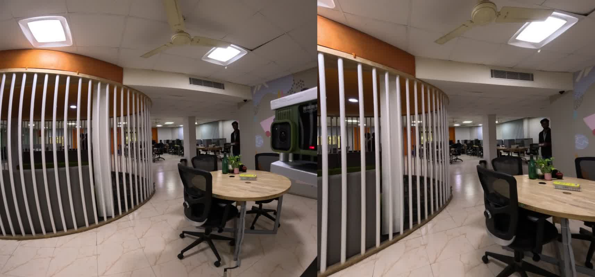
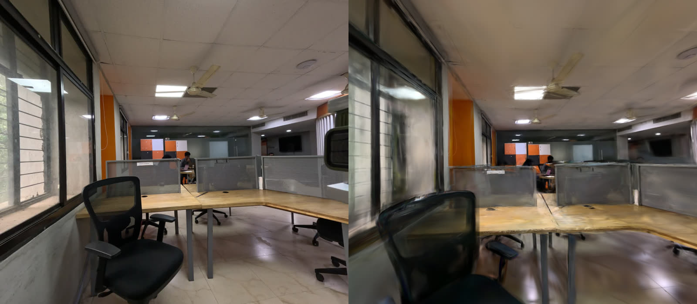
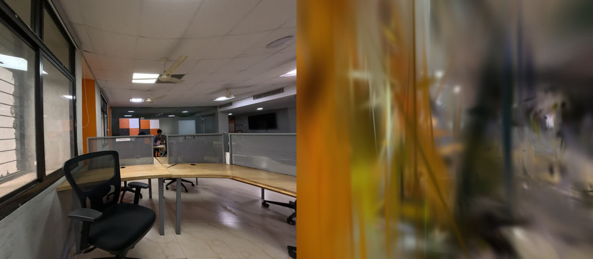
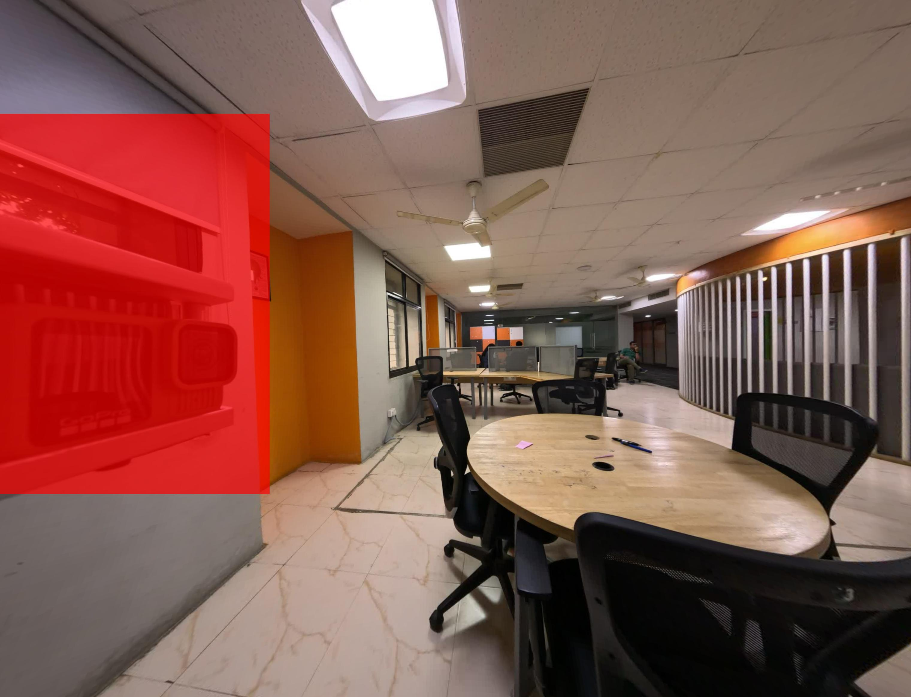
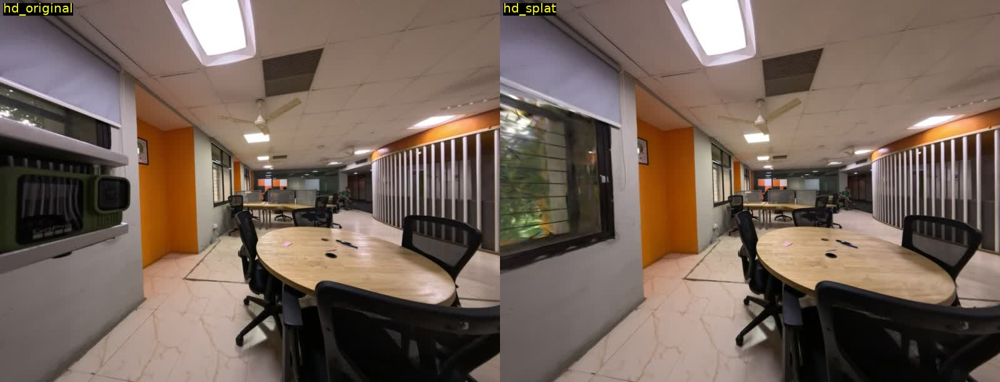
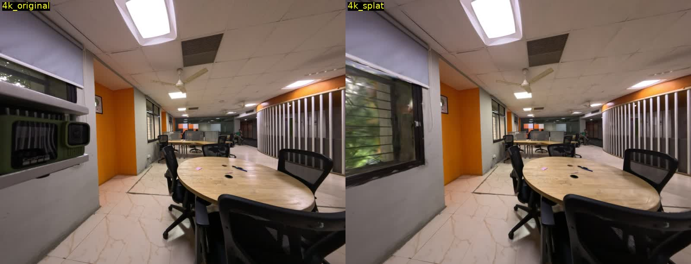
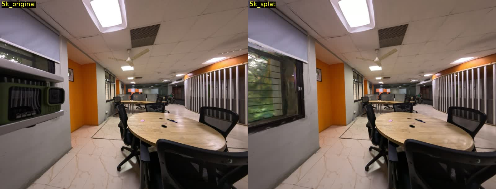

EXP-005: Multi-Camera Rig 3D Gaussian Splatting (Alia16K Capture2)¶
Owner: Tushar Vaidya Start Date: 2026-08-24 Last Updated: 2026-09-10 Status: Active — rig-wide reconstruction still blocked on trajectory drift (independently confirmed via IMU); single-camera pipeline validated as a practical fallback that sidesteps the problem entirely
Goal¶
Reconstruct a photorealistic 3D Gaussian Splat of an office space (focused on two work tables) from an 8-camera GoPro fisheye rig walkthrough, and — the harder question — determine whether COLMAP's recovered camera trajectory is actually accurate, using the rig's known physical geometry as ground truth, rather than trusting self-calibration blindly.
Hypothesis¶
- COLMAP's default self-calibrated bundle adjustment, run naively across an 8-camera rig, will drift from the rig's true physical geometry, especially for camera pairs with weak visual overlap.
- Locking the reconstruction to the rig's factory-measured extrinsics (
rig_bundle_adjuster) will produce a provably accurate trajectory. - An accurate trajectory should, other things equal, produce a sharper Gaussian Splat than an inaccurate one.
(3) turned out to be false in an interesting way — see Results.
Background¶
8× GoPro fisheye video (independently triggered, no genlock)
↓
Strategic frame extraction (dense at both tables, sparse in transit)
↓
COLMAP feature extraction + rig-aware explicit match list
↓
COLMAP mapper (self-calibrated OPENCV_FISHEYE, per-camera intrinsics)
↓
rig_bundle_adjuster (lock relative rig geometry to factory calibration)
↓
gsplat (nerfstudio) — on-the-fly fisheye undistortion, 3D Gaussian training
↓
viser web viewer + Cloudflare Quick Tunnel
Rig: 4 arms, 8 cameras, ~129° FOV each, 4 known near-zero-baseline stereo pairs (cam1↔6, cam2↔5, cam3↔8, cam4↔7). Factory calibration (intrinsics + az/el extrinsics) available from the manufacturing snapshot, independent of anything COLMAP estimates.
Capture & Rig Configuration¶
| Field | Value |
|---|---|
| Rig | Alia16K, 8× GoPro, ~129° FOV per camera |
| Capture | alia16k/2026_08_24/capture2, session2, ~4.5 min per camera |
| Native resolution | 5312×4648 (HEVC) |
| Working resolution | 1920×1680 (extracted frames) |
| Frame schedule | Dense (2s step) at table 1 [45–155s] and table 2 [207–265s], sparse (4s step) in transit [159–203s] — 98 timestamps/camera, 784 frames total |
| Distortion model | Kannala-Brandt equidistant (factory), OPENCV_FISHEYE (COLMAP) |
| Stabilization | GoPro HyperSmooth EIS — active, independent per camera (see Lessons Learned) |
Bug Found & Fixed Upstream: gsplat Fisheye Undistortion¶
Before any of the rig work, training on the very first reconstruction produced catastrophic renders (PSNR 12.6, streaky noise). Root cause: examples/datasets/colmap.py's OPENCV_FISHEYE undistortion used theta = sqrt(x1²+y1²) (≈ tan(θ)) instead of the correct theta = atan(r):
# before (wrong at wide FOV)
theta = np.sqrt(x1**2 + y1**2)
# after (correct)
r = np.sqrt(x1**2 + y1**2)
theta = np.arctan(r)
Negligible error near the image center, severe at ~129° FOV. Fixed and committed to the gsplat fork (f935073); PSNR recovered to 14.0 on the same poses.
Validating Rig Trajectory Accuracy¶
Self-calibrated COLMAP (no rig constraint) was compared against the 4 known stereo pairs' factory geometry, using full 3×3 relative-rotation geodesic angles (not just direction vectors, which hide roll error):
| Pair | Factory truth | Self-cal mean | Self-cal std | Error |
|---|---|---|---|---|
| cam1↔6 | 10.4° | 26.8° | ±13.2° | +16.4° |
| cam2↔5 | 3.6° | — | ±12.4° | — |
| cam3↔8 | 5.4° | — | ±36.3° | — |
| cam4↔7 | 4.3° | — | ±34.1° | — |
Self-calibration drifted by double digits on average, with per-pair std up to 36° — meaning individual timestamps swung across nearly a full hemisphere of disagreement, not just a fixed bias.
rig_bundle_adjuster --estimate_rig_relative_poses 0 locks the relative geometry to the factory values exactly (0.0° error, 0.0° std, by construction) while --estimate_rig_relative_poses free lets intrinsics self-refine. Verified this wasn't a coordinate-frame bug two ways: all 8 cam_from_rig_rotation matrices have determinant exactly +1 (no reflection), and full-matrix disagreement against noise-averaged self-calibration (not just angle magnitude) came out to 5–9° across all 4 independent stereo pairs — consistent with ordinary calibration tolerance, not a systematic axis error.
Camera Synchronization Discovery¶
The 8 GoPros were independently triggered — no hardware genlock. Checking each file's creation_time:
| Camera | Start time | Offset from cam1 |
|---|---|---|
| cam1 | 08:57:20 | 0s (reference) |
| cam2 | 08:57:13 | +7s |
| cam3 | 08:57:14 | +6s |
| cam4 | 08:57:25 | −5s |
| cam5 | 08:57:25 | −5s |
| cam6 | 08:57:19 | +1s |
| cam7 | 08:57:20 | 0s |
| cam8 | 08:57:29 | −9s |
Frame extraction originally used each video's own internal elapsed time — meaning "the same timestamp" across 8 files was actually up to 16 seconds apart in real time, during an active walkthrough. Re-extracting with wall-clock-corrected per-camera offsets and re-running self-calibrated SfM showed the effect directly on rig-rigidity noise:
| Pair | Offset applied | Std before | Std after |
|---|---|---|---|
| cam1↔4 | −5s | 19.2° | 2.0° |
| cam1↔5 | −5s | 12.4° | 1.8° |
| cam1↔8 | −9s (largest) | 36.3° | 2.2° |
| cam1↔6 | +1s | 13.2° | 13.4° (unchanged, as expected) |
| cam1↔7 | 0s | 34.1° | 33.6° (unchanged, as expected) |
| cam1↔2 | +7s | 6.4° | 15.4° (worse) |
| cam1↔3 | +6s | 12.3° | 36.6° (worse) |
Three of four corrected cameras improved dramatically — one pair went from the worst in the rig (36°) to 2.2°. cam2/cam3 got worse, likely because their creation_time reflects a GoPro chapter boundary rather than true session start (unconfirmed — see Next Steps).

IMU Cross-Check: Independent Evidence of Trajectory Drift¶
The GoPros' own embedded telemetry (GPMF track — accelerometer + gyro, ~200Hz, extracted via telemetry-parser) gives a way to sanity-check COLMAP's rotations against a completely independent, vision-free reference: gravity. This is a different diagnostic from the rig-rigidity check above (which compares COLMAP against factory stereo geometry) — this one compares COLMAP against physics, using no rig knowledge at all.
Method: for each registered frame, interpolate the camera-local accelerometer reading at that timestamp, normalize to a unit "local gravity direction," then transform it into world frame via COLMAP's own solved rotation (R_wc @ g_local). If the physical motion is close to pure yaw (turning, no tilt — true for a wheeled/cart-mounted rig, confirmed separately below), composing any number of yaw steps must preserve a fixed world-frame gravity direction exactly — rotations about a shared axis compose without leaving that axis. This is linear algebra, not an approximation.
Findings (on sparse_fisheye_synced, cam1's own 98 frames, single physical camera):
| Check | Result |
|---|---|
| Camera-local gravity direction, full 55K-sample IMU stream | 1.13° mean spread — extremely stable |
| Camera-local gravity direction, specifically at the 98 registered-frame timestamps | 1.10° mean spread — confirms no timestamp/interpolation bug |
| World-frame gravity (local signal × COLMAP rotation), within cam1's own sequence | 74.5° mean spread |
| Pairwise consecutive-frame rotation deltas (COLMAP alone, no IMU) | 0.1–12°, smooth, no jumps |
The last two rows together are the interesting part: COLMAP's frame-to-frame rotations look smooth in isolation, yet composing them disagrees with gravity by tens of degrees. That's consistent with a small, systematic per-step bias that's fixed in the camera's own rotating body frame rather than world frame — it precesses as the camera yaws, invisible pairwise, but compounding into large drift over a sequence. This independently corroborates the rig-rigidity finding above (self-calibration drifting by double digits, std up to 36°) using a completely different measurement — vision-free physics rather than factory stereo geometry.
Two alternative explanations were tested and ruled out before landing on "COLMAP rotation drift":
- IMU axis-convention or mounting-offset bug — ruled out. A fixed/constant offset between the IMU's reported frame and the camera's true optical frame would produce a consistent but rotated result when combined with vision poses, not scatter. Tested both rotation-matrix conventions (
RandR.T); both failed the same way (~70-75° spread either direction). - Noisy/bad IMU data (e.g. from real walking motion) — ruled out. Camera-local gravity is stable to ~1° across the entire stream, not just isolated instants — there's no meaningful contamination to explain away.
Attempted Fix: Per-Frame Gravity Alignment (Failed)¶
The natural next step: for every frame, apply the minimal rotation (axis ⊥ to both vectors, touching yaw not at all) that forces its own measured world-gravity estimate to match one fixed target. This corrects exactly the 2 drifting DOF (roll/pitch) and, in principle, leaves yaw untouched.
Result: made things worse, not better. Pairwise consecutive-frame rotation deltas after correction jumped to 4–127° (vs. the original smooth 0.1–12°). Root cause: the correction is applied fully independently per frame, with no temporal smoothing — since the input world-gravity estimates were themselves inconsistent frame-to-frame, forcibly snapping each one to an identical target just inherits that inconsistency as discontinuous jumps. It's a symptom-level patch, not a fix for whatever's actually making COLMAP's per-frame rotations mutually inconsistent.
What a real fix requires: joint optimization — bundle adjustment that minimizes vision reprojection error and IMU relative-rotation residuals between consecutive frames simultaneously (not one overriding the other), letting both information sources properly average out. That's a genuine build (custom cost function in scipy/g2o, or patching COLMAP's C++ bundle adjuster) — not attempted here; logged as future work below.
Rig-Locked Retry on the Sync-Corrected Model: Also Failed¶
The pending next step from the previous update — running rig_bundle_adjuster-style rig-constrained mapping fresh on sparse_fisheye_synced (rather than gravity-correcting sparse_fisheye_synced directly) — was attempted and failed to find a usable seed: colmap mapper on the rig database repeatedly logged Finding good initial image pair → No good initial image pair found, terminating after ~10.7 minutes with no reconstruction. This is a different failure mode than the earlier rig-locked runs (which did register images, just blurrily) — it suggests the rig constraint combined with the sync-corrected frame set doesn't even have a clean enough starting pair to seed from, not just a downstream blur problem.
Given two independent attempts to fix the 8-camera trajectory (naive IMU gravity-snap, and a fresh rig-locked mapper pass) both failed, the practical path taken next was to sidestep the multi-camera consistency problem entirely — see below.
Results¶
Fisheye → rectified undistortion (factory calibration)¶

Reconstruction variants tried¶
| Run | Approach | Images registered | Reprojection error | PSNR | SSIM | LPIPS | Gaussians |
|---|---|---|---|---|---|---|---|
result_30k |
Self-cal, buggy undistort | 784/784 | 0.82px | 12.61 | 0.639 | 0.744 | — |
result_30k_v2 |
Self-cal, fix applied | 784/784 | 0.82px | 13.97 | 0.679 | 0.594 | 626,330 |
result_rig_30k |
Rig-locked, offline pinhole undistort (1600²) | 663/784 | 0.90px | 13.88 | 0.721 | 0.667 | 46,061 |
result_hires_30k |
Rig-locked, offline pinhole undistort (1920×1680) | 738/784 | 0.93px | 13.90 | 0.722 | 0.645 | 60,481 |
result_fisheye_30k |
Rig-locked, raw fisheye + self-refined intrinsics | 784/784 | 0.79px (best) | 14.45 (best) | 0.739 (best) | 0.624 | 82,106 |
result_fisheye_synced |
Rig-locked + wall-clock sync correction | 784/784, single connected model | pending retrain | pending | pending | pending | pending |
result_fisheye_30k is the best-performing rig-locked variant on every metric, and the reprojection error is better than even the original unconstrained self-calibration (0.79px vs 0.82px) — locking the true geometry cost nothing in 2D fit quality.
The counter-intuitive finding: correct geometry ≠ sharp render¶
Despite result_fisheye_30k having the best metrics of any rig-locked run, and the same camera model (raw fisheye, self-refined intrinsics) that produced sharp results in result_30k_v2, its actual renders are visibly blurrier — confirmed on the exact same frame (cam1, t=0125) from both runs:

result_30k_v2 (self-calibrated, no rig lock) — ground truth (left) vs. render (right). Desks, chairs, cabinets, orange wall all sharp and recognizable.
result_fisheye_30k (rig-locked, same physical camera, same nominal frame) — ground truth (left) vs. render (right). Heavily blurred despite better reprojection error and identical camera model.Four separate hypotheses were tested and ruled out before landing on the real explanation (see Lessons Learned):
- Densification threshold too conservative (
--strategy.grow-grad2d) — halved it, Gaussian count grew 3.5× but blur was unchanged. - Offline undistortion resolution/FOV too narrow — redid at full 1920×1680, same blur.
- Rig extrinsics in a different coordinate frame than COLMAP's convention — ruled out directly (determinant check + full-matrix comparison against noise-averaged self-calibration, see above).
rig_bundle_adjusternot fully converged (Termination: No convergence) — reran with tight tolerances, it converged, final cost barely moved, same blur.
Single-Camera Fallback (cam4) — Sidesteps the Drift Problem Entirely¶
With both the IMU-based drift correction and a fresh rig-locked mapper attempt having failed (see above), the practical move was to stop fighting multi-camera consistency and reconstruct from one camera only. A single camera has no cross-camera sync/rig-consistency problem to begin with — the whole failure mode this experiment has been chasing simply doesn't exist for a monocular sequence.
Camera selection: sampled all 8 cameras at 5 timestamps each across the session to find which one best frames both tables. cam4 and cam7 were the clear candidates (3/5 sampled frames each showing a clear round table); cam4 was chosen, with a further dense scan confirming a sustained ~120s continuous-arc window (t≈90–210s) with strong, consistent coverage of both tables.
Pipeline: 121 frames (1/sec over the window) → monocular OPENCV_FISHEYE COLMAP SfM (121/121 registered, 100%, single connected model, ~2 min total — no drift, because there's nothing to drift against) → colmap image_undistorter (fisheye→pinhole, required because gsplat's rasterizer needs pinhole-like projection geometry for the EWA splatting math — see note below) → nerfstudio splatfacto, 30k steps.
Masking the rig body: every frame has a neighboring GoPro housing fixed in the same pixel region (rig structure, same issue the user flagged for the multi-camera captures). Critically, a mask applied only at COLMAP's feature-extraction stage keeps it out of matching, but the raw pixels are still what gets trained on — the housing would still get reconstructed as a floating artifact. The mask has to also be passed to nerfstudio's training stage (colmap --masks-path masks, resolution-matched to the post-undistortion image size, which differs from the pre-undistortion size) so it's excluded from the photometric loss too. Done correctly, the splat naturally inpaints the occluded region from nearby viewpoints along the arc — no visible trace of the rig body in the final render.


Result: PSNR 21.02, SSIM 0.917, LPIPS 0.190 (ns-eval, 16 held-out views), 336,682 Gaussians. Note this used the standard nerfstudio+gsplat integration path (pre-undistort to pinhole, ns-train splatfacto), which is a different code path than the native-fisheye gsplat example trainer used elsewhere in this experiment (the one with the theta=atan(r) fix above) — nerfstudio's own camera/ray-generation layer doesn't call into that fisheye-aware trainer code at all, so that fix doesn't carry over automatically when going through ns-train. Pre-undistorting to pinhole is the correct workaround specifically for the nerfstudio integration path.
Resolution Ablation (HD / 4K / 5K)¶
A controlled follow-up, directly relevant to the open "does more resolution help splat quality" question from other capture work: using the exact same 121-frame trajectory, camera poses, and sparse point cloud (poses don't depend on image resolution — only intrinsics scale, translations are in world units), three resolution tiers were extracted natively from the same source video and trained identically (30k steps each):
| Tier | Undistorted resolution | PSNR | SSIM | LPIPS | FPS |
|---|---|---|---|---|---|
| HD | 3041×2328 | 21.02 | 0.917 | 0.190 | 36.1 |
| 4K | 6086×4658 | 21.03 | 0.927 | 0.225 | 9.0 |
| 5K | 8420×6445 | 21.02 | 0.930 | 0.225 | 4.8 |


PSNR is flat across HD→4K→5K at matched training budget (30k steps). SSIM ticks up slightly with resolution; LPIPS gets worse, not better, at higher resolution. Most likely explanation: higher-resolution targets have more high-frequency detail to fit, and a fixed iteration count isn't enough to converge as tightly per-pixel — the extra input detail isn't "free," it costs more optimization to actually use. FPS drops hard as expected (more pixels to rasterize per frame). This is a real, checkable result worth reconciling against any other resolution-vs-quality claims made from a different training budget per tier — if iteration count scaled up with resolution elsewhere, that would explain a genuinely different (improving) trend.
Impediments¶
Current Blockers
- cam2/cam3 sync correction made rigidity worse, not better — likely GoPro chapter-split metadata (file's
creation_timereflects chapter start, not true session start), not yet confirmed or fixed - ~~
result_fisheye_syncedreconstruction has not yet been throughrig_bundle_adjuster+ gsplat training~~ — attempted, failed:colmap mapperon the rig-constrained database couldn't find a usable initial image pair at all (No good initial image pair found, repeated, ~10.7 min, no reconstruction). Different failure mode than earlier rig-locked runs (which registered but rendered blurry) — this one can't even seed. - ~~No independent way to check whether the drift is real or a self-calibration artifact~~ — confirmed independently via IMU: camera-local accelerometer gravity direction is stable to ~1° (both full-stream and at exact registered-frame timestamps), yet composing it through COLMAP's own solved rotations produces 74.5° mean world-frame scatter within a single camera's own sequence. Two alternative explanations (IMU axis/calibration offset, noisy IMU data) were tested and ruled out — points at genuine rotation drift in COLMAP's estimates, not an IMU artifact.
- A naive per-frame IMU gravity-alignment correction was tried as a fix and made pose smoothness worse (pairwise deltas jumped from smooth 0.1–12° to 4–127°) — it's a symptom-level patch, not a real fix. A proper fix needs joint bundle adjustment (vision + IMU residuals optimized together), not yet attempted.
Known Risks
- HyperSmooth EIS is applied independently per camera, frame by frame — this is suspected to be the real ceiling on render sharpness (see below), and no amount of calibration/sync fixing may fully resolve it without disabling EIS at capture time
- GPU host is shared (8× RTX PRO 6000 Blackwell) — CUDA MPS was found misconfigured (stuck in
EXCLUSIVE_PROCESSmode, blocking other users) during this experiment and had to be stopped; all training in this experiment now deliberately pinned to GPU 0/1 only
Practical Resolution (interim)
Rig-wide (8-camera) reconstruction remains blocked pending a real joint IMU+vision fix (see Next Steps). The single-camera cam4 pipeline is validated and working — 100% registration, no drift, clean masking, both tables reconstructed coherently — and is the recommended path for deliverables that don't strictly need the full 360° rig coverage.
Evaluation Protocol¶
- Metric: PSNR / SSIM / LPIPS on held-out
test_every=8views, cross-checked against direct visual inspection of same-pose renders (the automated split can silently cluster onto one camera depending on filename sort order — caught and worked around twice in this experiment) - Ground truth for trajectory accuracy: factory az/el rig calibration (
stitcher_rotations.yaml), independent of any COLMAP output - Real environment: office walkthrough, two work tables as primary objects of interest
Lessons Learned¶
- A hard rig constraint and independently-stabilized cameras don't mix well. HyperSmooth EIS warps each camera's video independently, frame by frame, based on that camera's own IMU. The physical rig is rigid; the video content isn't, at the per-frame level. Self-calibration can absorb this (each frame's pose is estimated independently); a hard rig lock cannot (it forces identical relative geometry every timestamp), and the residual mismatch shows up as pervasive dense blur while sparse-keypoint reprojection error stays deceptively low.
- Low reprojection error is not sufficient evidence of correctness. Every rig-locked variant reported 0.79–0.93px reprojection error — as good as or better than self-calibration — while still rendering worse. Reprojection error is measured at sparse, robust SIFT keypoints; dense photometric quality needs much tighter multi-view pixel agreement than that.
test_every=8eval splits silently encode a sampling bias that depends entirely on filename sort order (camera-then-timestamp vs timestamp-then-camera). Caught this twice — once discovering an eval set was 100% one camera, meaning reported metrics for that run reflected only that camera's reconstruction quality.- Unsynced multi-camera capture is a real, checkable failure mode. A quick
creation_time/ffprobecheck across all 8 files would have caught the up-to-16-second desync before any reconstruction work started. - COLMAP's "no convergence" isn't always meaningful — it can just mean the default iteration cap was hit with strict tolerances on an already-near-optimal solution. Always check whether the reported cost actually moves before treating it as a red flag.
- A shared GPU host needs active monitoring, not just good intentions —
nvidia-mps.servicewas silently locking all 8 GPUs toEXCLUSIVE_PROCESSmode host-wide, blocking every other user, until manually caught and stopped. - A physics-based cross-check (IMU gravity) can confirm a drift diagnosis that reprojection error alone can't. Reprojection error looked fine (0.79–0.93px) across every rig-locked variant even though rendering was blurry; the IMU cross-check gave an independent, vision-free signal (74.5° world-frame gravity scatter within one camera's own sequence) pointing at the same root cause the rig-rigidity numbers already suggested — two unrelated diagnostics agreeing is much stronger evidence than either alone.
- Don't trust a per-frame "fix" that isn't jointly optimized. Snapping each frame's orientation independently to satisfy an external constraint (IMU gravity, here) without any temporal coupling can make pose smoothness worse, not better, if the constraint itself is derived from already-inconsistent inputs. The lesson generalizes past IMU: any per-frame correction needs to be solved jointly with its neighbors, not applied frame-by-frame in isolation.
- When multi-camera consistency is unresolved, don't block the whole deliverable on it. A single-camera reconstruction has no rig/sync consistency problem by construction — it was faster to build, registered 100%, and produced a clean, usable splat while the 8-camera drift root-cause remains open. Prefer "ship the narrower thing that works" over blocking on the harder problem when the narrower thing meets the actual need (two tables, not full 360° coverage).
- A mask must be applied at both the SfM-matching stage and the splat-training stage, separately. COLMAP's
--ImageReader.camera_mask_pathonly keeps a region out of feature matching — the raw pixels are still what nerfstudio trains on. The rig housing only disappeared from the final render after also wiring the (separately resolution-scaled, since undistortion changes image dimensions) mask intons-train ... colmap --masks-path. - Resolution doesn't buy PSNR for free at a fixed training budget. HD/4K/5K trained for the same 30k steps on identical poses/points produced flat PSNR (21.0 across all three) and worse LPIPS at higher resolution — more detail to fit costs more optimization to actually use, it doesn't improve results "for free" unless iteration count scales with it too.
Next Steps¶
- Confirm the cam2/cam3 chapter-split hypothesis (check for
GH02.../multi-chapter filenames or GPMF telemetry timestamps) and correct their offsets properly - ~~Run
rig_bundle_adjuster+ full gsplat training onresult_fisheye_synced~~ — attempted, failed at the mapper stage (no usable initial pair found); see Rig-Locked Retry above - Build a real joint IMU+vision optimization (bundle adjustment with both reprojection and IMU relative-rotation residuals, solved together) — the naive per-frame gravity-snap correction tried here isn't sufficient and shouldn't be reused as-is
- If EIS-induced blur remains the ceiling after full sync correction, the real fix is upstream: re-shoot with EIS disabled, or with a higher shutter speed if it turns out to be genuine motion blur rather than EIS warp
- Consider whether
rig_bundle_adjuster's hard constraint could be relaxed into a soft prior/regularizer instead of an exact lock, to combine trajectory-accuracy guarantees with self-calibration's per-frame flexibility - Investigate whether resolution does improve PSNR when training iteration count is scaled proportionally with resolution, rather than held fixed (this experiment only tested fixed-budget, see Resolution Ablation above)
- If more of the rig's angular coverage is needed than one camera gives, consider reconstructing 2–3 well-chosen cameras independently (each monocular, no rig constraint) and merging point clouds post-hoc, rather than a single rig-wide joint solve
References¶
- gsplat fork — undistortion fix,
CLAUDE.mdenvironment/pipeline documentation,scripts/(mask/export/render utilities) - Factory calibration source:
Alia_16K/parikshit_workspace/capan1/snapshots/snapshot_2026_06_18/(calibration_outputs/,README_PIPELINE.md,code/hires_stitch.py) - telemetry-parser — GPMF (GoPro) IMU extraction, used for the gravity cross-check above (
tp.normalized_imu()) - Single-camera pipeline environment: nerfstudio +
gsplatfork +hloc, built in a distrobox container on the shared 8×RTX PRO 6000 Blackwell host — standard nerfstudions-train splatfactointegration path (distinct from the native-fisheyegsplatexample trainer used earlier in this experiment) - Related: EXP-002 — same wiki, unrelated pipeline, similar "trust but verify the geometry" lesson